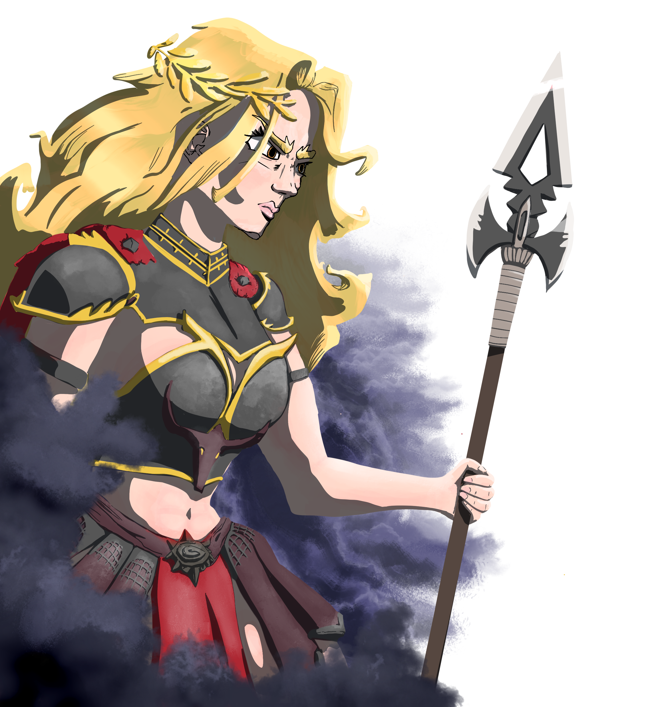
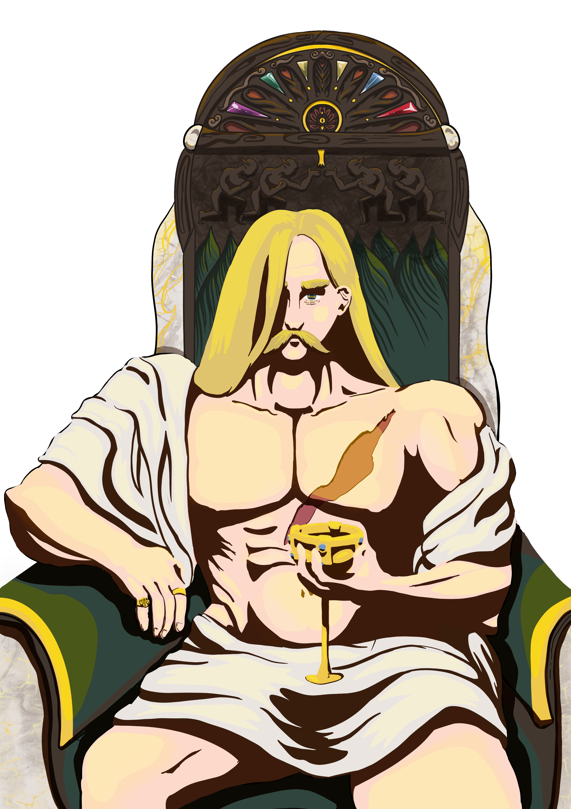
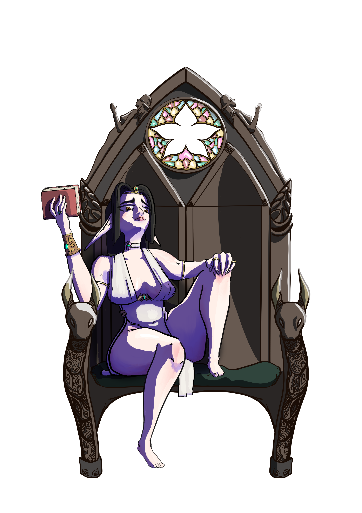
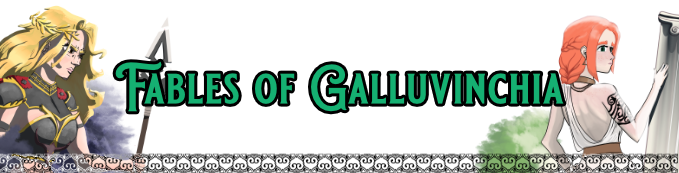
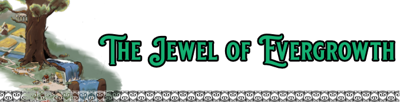

Map of Galluvinchia
Galluvinchia
Scroll to zoom • Click to explore





Where gods walk among mortals...
...and heroes are forged in the quilt of stars.
Magic resonates like the strike of an anvil
and the souls of the dead fuel the lights of entire cities.
Societies built on conflicting truths.
Nothing is what it seems.
Something darker stirs in the depths.
Will you answer the call?
Map of Galluvinchia
Fables of Galluvinchia
A world where gods walk among mortals

A new land for you to discover, with great cities, custom races and backgrounds, even heroic backgrounds that immerse your character directly in the adventure.
A deep and twisted story where uncovering the past is the only way to protect the future of Galluvinchia.

The Jewel of Evergrowth, a hamlet growing under the shadow of the First Tree, recently transformed by a new silver mine and the arrival of many new faces.
Perfect for levels 1–5. Unfortunately, not all stories here are simple ones.
The Bun Cult is a small independent creative studio founded to develop the world of Galluvinchia.
The creative mind behind Galluvinchia is Alejandro, writer, worldbuilder and storyteller. The administrative force is his wife Jacqueline, his partner and muse.